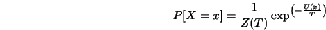
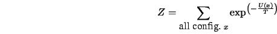
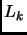
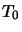

Let  be the number of iterations at
temperature , then the simulated annealing algorithm
follows
Listing 1.

Under the inverse log cooling schedule the above
algorithm converges in probability to the set of
globally minimum solution (see Geman and Geman [79],
Hajek [81]). Another crucial aspect of the SAA is the choice of the
initial temperature , we discuss this in Appendix
C.